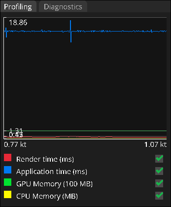
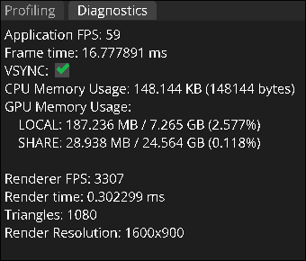

Profiling and Diagnostics
Only if you're curious
Broad Overview
The profiling and diagonistics panels are located in the bottom left of your screen. These panels cover application performance, and are largely only useful for developers, or if you're curious on how much of your computer Flow is chewing on!

If this looks confusing, or if it sounds uninteresting, thats ok! You don't need to really care about this panel as a user. You can safely ignore it.
Profiling
The current panel being displayed will be the profiling panel. This panel shows a real-time graph of the application performance. you can also toggle on what stats are being tracked by clicking the checkboxes. The actual names of the stats are pretty self explanatory!
Diagnostics
If you click the "diagnostics" tab, the panel will swap to the diagnostics panel! Here you can see all the stats from the profiling tab, but as real-time numbers instead of a graph. There's also some additional information here, such as the number of triangles being rendered, and an option to toggle VSYNC.
